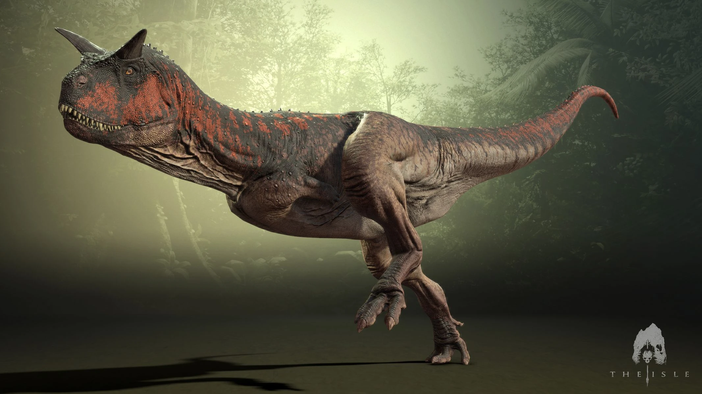

Allossauro

Nome: Allossauro (Allosaurus fragilis)
Período: Jurássico Superior, aproximadamente 155-150 milhões de anos atrás
Localização: Principalmente encontrado na América do Norte
Tamanho: Cerca de 9 metros de comprimento e 2,1 metros de altura no quadril
Peso: Estimado entre 2 a 4 toneladas
Características distintivas:
1. **Cabeça e mandíbulas poderosas:** Possuía uma cabeça grande e uma mandíbula cheia de dentes afiados, capazes de triturar presas com eficiência.
2. **Braços e garras:** Apesar de relativamente pequenos em comparação com o corpo, seus braços tinham garras grandes e afiadas, provavelmente utilizadas para agarrar e segurar presas.
3. **Bípede:** Como todos os terópodes, caminhava sobre as patas traseiras, deixando as dianteiras livres para caçar e manipular presas.
Comportamento: Acredita-se que fosse um predador ativo, caçando outros dinossauros de médio porte, como o Stegosaurus e o Diplodocus. Sua agilidade, velocidade e força o tornavam um predador formidável.
Descobertas e Importância: O Allossauro é conhecido por uma abundância de fósseis encontrados na América do Norte, o que ajudou os cientistas a compreenderem melhor a ecologia e a diversidade dos dinossauros durante o Jurássico. Sua relativa abundância em fósseis também o tornou um dos dinossauros mais estudados e reconhecíveis do seu período.
Apesar de sua fama, ainda há muito a aprender sobre o Allossauro, especialmente em relação ao seu comportamento social, reprodução e interações com o ambiente.
Carnotauro

O Carnotauro é um dinossauro terópode que viveu durante o período Cretáceo, aproximadamente entre 72 e 69 milhões de anos atrás, na região que hoje é a América do Sul.
Seu nome científico, Carnotaurus sastrei, significa "touro carnívoro", uma referência à sua aparência e hábitos alimentares.
Ele pertencia à família dos abelisaurídeos, um grupo de terópodes caracterizado por crânios curtos e robustos, membros anteriores pequenos e membros posteriores poderosos.
O Carnotauro possuía um crânio distintivo, com chifres curtos acima dos olhos, e suas mandíbulas eram equipadas com grandes dentes serrilhados, adaptados para dilacerar a carne de presas.
Estima-se que o Carnotauro tenha alcançado cerca de 8 a 9 metros de comprimento e pesado em torno de 1,5 toneladas.
Sua anatomia sugere que era um predador ágil, possivelmente capaz de correr em alta velocidade para capturar suas presas.
Fósseis deste dinossauro foram encontrados principalmente na Argentina, especialmente na Formação La Colonia, e também no Brasil.
A descoberta e estudo desses fósseis têm fornecido informações valiosas sobre a diversidade e evolução dos dinossauros na América do Sul durante o Cretáceo.
Apesar de sua aparência distintiva e importância paleontológica, ainda há questões em aberto sobre diversos aspectos da biologia e ecologia do Carnotauro, incluindo seu comportamento, interações com outros dinossauros e seu papel nos ecossistemas do Cretáceo.
Dilofossauro

O Dilofossauro foi um dinossauro terópode que viveu durante o período Jurássico, aproximadamente entre 193 e 189 milhões de anos atrás, na região que hoje é o sudoeste dos Estados Unidos.
Seu nome científico, Dilophosaurus wetherilli, refere-se às duas cristas distintivas em seu crânio, embora nem todos os espécimes tenham essas cristas.
Era um predador bípede de porte médio, alcançando cerca de 6 metros de comprimento e pesando em torno de 500 quilogramas.
Suas características mais notáveis incluem as cristas ósseas em seu crânio, que podem ter sido usadas para exibição ou comunicação visual, e as mandíbulas equipadas com dentes afiados e serrilhados, indicando uma dieta carnívora.
Os fósseis do Dilofossauro foram encontrados principalmente no Parque Estadual de Ghost Ranch, no Novo México, e no Parque Nacional de Navajo, no Arizona.
Seu ambiente era composto por paisagens semiáridas e florestas tropicais sazonais.
Apesar de sua fama, muito do que sabemos sobre o Dilofossauro ainda é especulativo, e sua biologia e comportamento continuam sendo temas de estudo e debate entre os paleontólogos.
Tiranossauro

O Tiranossauro rex, frequentemente abreviado como T. rex, é um dos dinossauros mais reconhecíveis e estudados.
Viveu durante o final do período Cretáceo, aproximadamente entre 68 e 66 milhões de anos atrás, na região que hoje é a América do Norte.
Este gigante predador era um terópode bípede com crânio maciço, mandíbulas repletas de dentes serrilhados e membros poderosos.
O T. rex é notório por seu tamanho colossal, podendo atingir até 12 metros de comprimento e pesar cerca de 8 toneladas.
Sua cabeça era grande em proporção ao corpo, com olhos voltados para a frente, sugerindo uma visão binocular aguçada.
Possuía braços relativamente curtos em comparação com o tamanho do corpo, mas suas pernas musculosas indicam uma locomoção rápida.
Este predador dominava os ecossistemas do final do Cretáceo, caçando uma variedade de presas, incluindo grandes dinossauros herbívoros.
Seu estilo de vida e comportamento continuam sendo tópicos de estudo e debate entre os paleontólogos, com algumas teorias sugerindo que ele poderia ser um caçador ativo, enquanto outras sugerem que ele era um oportunista que se alimentava de carcaças.
Fósseis de T. rex foram encontrados principalmente nos Estados Unidos, especialmente em estados como Montana, Dakota do Sul e Wyoming.
Sua descoberta e estudo contribuíram significativamente para nosso entendimento da biologia e evolução dos dinossauros, tornando-o uma das espécies mais icônicas do mundo pré-histórico.
Spinossauro

O Spinosaurus é um dos dinossauros mais notáveis e distintos do período Cretáceo.
Ele viveu entre aproximadamente 112 e 93 milhões de anos atrás, na região que é hoje o norte da África.
Seu nome significa "lagarto-espinhoso", referindo-se às suas distintivas espinhas neurais alongadas que formavam uma espécie de vela dorsal.
Este gigante terópode aquático era adaptado para uma vida semi-aquática, com características únicas como narinas posicionadas no topo do crânio para permitir a respiração enquanto estava submerso, além de membros anteriores alongados com garras possivelmente adaptadas para a pesca.
O Spinosaurus tinha uma dieta predominantemente piscívora, embora também se acredite que pudesse se alimentar de outras presas, incluindo dinossauros herbívoros e carcaças.
Seu tamanho variava, mas estima-se que alguns espécimes pudessem alcançar até 15 metros de comprimento e pesar mais de 10 toneladas, tornando-o um dos maiores terópodes conhecidos.
Fósseis de Spinosaurus foram descobertos principalmente no Egito e no Marrocos, com evidências sugerindo que ele habitava áreas costeiras e fluviais.
Seu estilo de vida e ecologia continuam sendo áreas ativas de pesquisa e debate entre os paleontólogos, com muitos mistérios ainda a serem desvendados sobre este fascinante predador aquático.
Suchomimo

O Suchomimus é um dinossauro terópode que viveu durante o período Cretáceo, cerca de 112 a 93 milhões de anos atrás, na região que hoje é o norte da África.
Seu nome significa "imitador de crocodilo", uma referência à sua semelhança com os crocodilos em alguns aspectos de sua anatomia.
Este dinossauro tinha um crânio alongado e estreito, com dentes cônicos e um focinho semelhante ao de um crocodilo.
Sua característica mais distintiva era um conjunto de espinhos altos que se projetavam para trás de sua cabeça, possivelmente utilizados para exibição ou regulação da temperatura corporal.
O Suchomimus era um predador semi-aquático, adaptado para caçar presas tanto em terra quanto na água.
Estima-se que pudesse alcançar até 9 metros de comprimento e pesar cerca de 2 toneladas.
Fósseis de Suchomimus foram encontrados principalmente no norte do continente africano, especialmente no Níger.
x Sua descoberta contribuiu significativamente para nosso entendimento da diversidade e evolução dos dinossauros durante o Cretáceo, especialmente na África, uma região que ainda é relativamente pouco explorada em termos de paleontologia.